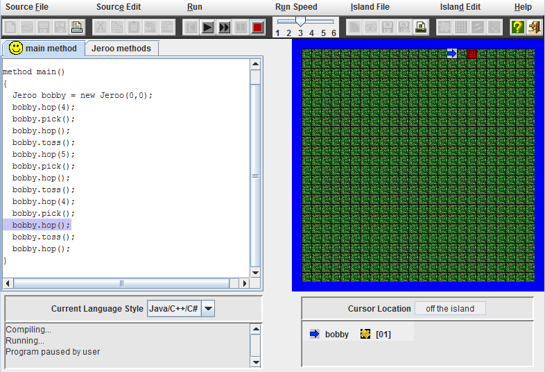
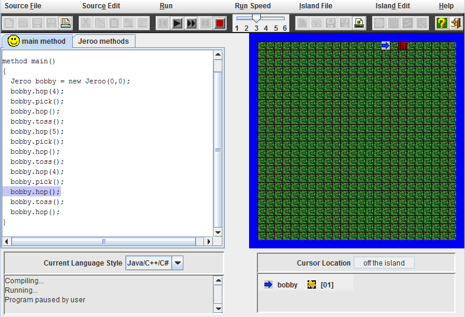
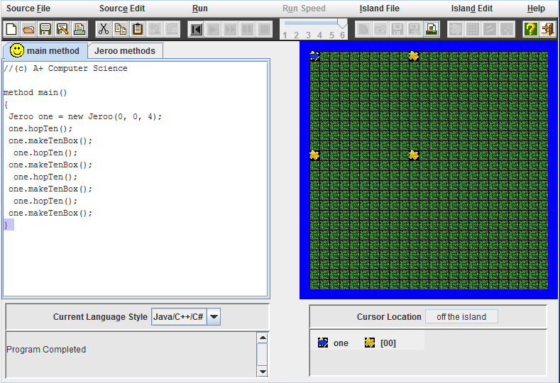
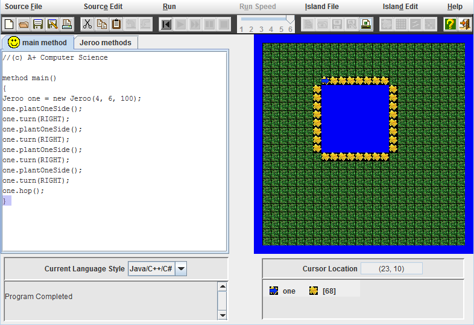
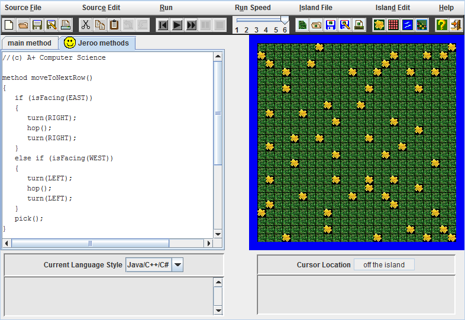
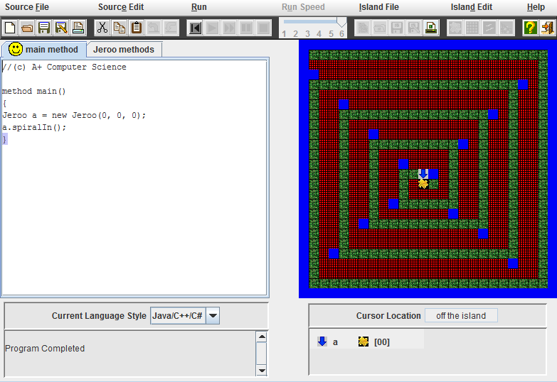
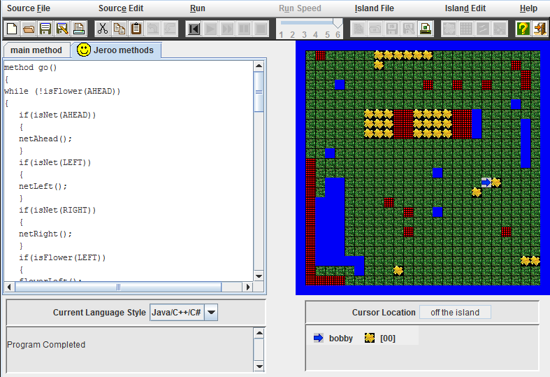
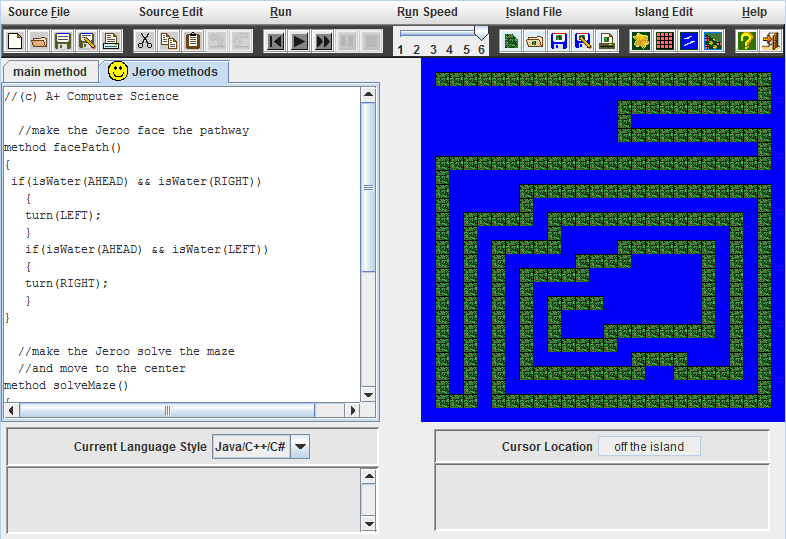

Jeroo Content
Unit 1
 

Unit Description
This unit was an introduction to Jeroo and basic methods. We learned how to use basic methods like hop and pick, and how to use them to solve puzzles. Puzzles required lots of these commands, as we had not learned custom methods yet.
Unit Concepts
- toss method
- hop method
- pick method
- instantiating Jeroos
- turn method
Unit 2
 
Unit Description
This unit introduced custom Jeroo methods to make using Jeroo easier. We also learned how to use these methods to simplify our code, and create less clutter. Another thing we learned was how to use these methods for different Jeroos.
Unit Concepts
- using custom Jeroo methods
- using custom methods inside custom methods
- controlling Jeroos using custom methods
- making multiple Jeroos
- how one method can be used by all Jeroos
Unit 3
 
Unit Description
This unit used custom methods along with while loops and booleans. We learned how to use while loops to solves puzzles and simplify our code. We also learned how booleans worked and how we could use them with our while loops.
Unit Concepts
- using while loops to solve problems
- using booleans to create while loops
- using while loops in custom Jeroo methods
- using custom methods in while loops
- how to use the ! function with booleans
Unit 4
 
Unit Description
This unit was an introduction to recursions, and introduced if and else statements with booleans. We learned how to use if and else statements to help solve our code, and when we could use them. We also learned how we could use recursions to make our code very simple.
Unit Concepts
- recursions
- if else statements
- using booleans with if and else statements
- using if and else statements to control Jeroos
- using recursions to solve problems